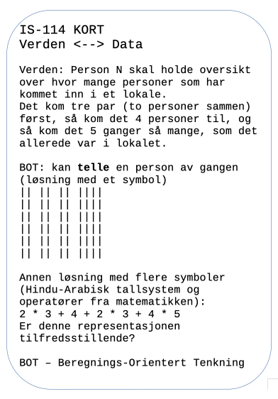

Hvordan kommer vi i gang?
Temaets videoer:
- Teaser video for JavaZone 2010 featuring Jenny Skavlan, .htm
- Carlo Micheli, "The Turing Machine - An Implementation", .htm
Temaets kode
Kodeeksempel 1 (forstå komposisjon og gjenbruk)
overlay-align("pinhole", "bottom", overlay-align("pinhole", "middle", circle(8, "solid", "white"), circle(25, "solid", "black")), overlay-align("pinhole", "top", overlay-align("pinhole", "middle", circle(8, "solid", "black"), circle(25, "solid", "white")), overlay-align("pinhole", "middle", crop(50, 0, 100, 100, circle(50, "solid", "black")), overlay-align("pinhole", "middle", circle(50, "outline", "black"), circle(50, "solid", "white")))))
1 Fantasi- / ideell-maskin
En fantasi-/ideell-maskin er en modell mellom kildekoden og den fysiske maskinen hvis formål er å hjelpe den som lærer å programmere (oversatt og omformulert av JG basert på bloggen .htm)
Fortellinger om kode, som en "verdi ligger i minne", "en variabel er som en boks", "alt er en fil", "alt er en objekt" osv., er typiske eksempler på fantasi-maskiner. Fantasi-maskiner kan også forstås som semantiske regler, som beskriver hva som skjer inne i maskinen. For eksemepel, vi kan bruke addisjon for å si noe om design av maskinen som kan gjennomføre addisjon.
Kodeeksempel 2 (forstå funksjon)
# Anta at vi har et uttrykk 3 + 4 # uttrykket behandles av et program # som splitter det opp i "tokens" og klassifiserer disse # (tall, 3), (op, +), (tall, 4) # Basert på dette lages det instruksjoner for maskinen: # f. eks. i hvilken rekkefølge og hvordan skal vi lagre "tokens" # i maskinen for å returnere ønsket resultat. # Når data er lagret, utføres instruksjonene en etter en. # Blant annet har prosessor en innebygd instruksjon # for addisjon, som er laget basert på det binære # tallsystemet 7
2 Arbeid i klassen
Legg merke til de forskjellige begrepene som brukes Kodeeksempel 2.
Vi skal videre analysere begrepene som uttrykk, program, tokens, instruksjon, op (som står for operatør), prosessor, innebygd instruksjon, lagring og det binære tallsystemet.
Spørmsål for arbeid i klassen.
Beskriv dine tanker så nøyaktig som mulig når du skal "prosessere" det symbolske uttrykket "3 + 4". Diskuter og sammenligne med en annen student (eller eventuelt flere andre).
Gjør det sammen med uttrykket "3 + 5 * 7". Hva er forskjellig (i dine tanker) fra uttrykket "3 + 4".
Beskriv dine tanker når du ser verdien "Jeg skal lære programmering". Diskuter og sammenligne igjen.
Beskriv dine tanker når du ser maleriet av Munk, Skrik (.htm)
Nå prøv å tenke berenginsorientert i de tre tilfellene.
{kind=link}
3 Diverse "verktøy"
| Verktøy BOT: Beregningsorientert tenkning | ||
|---|---|---|
| Begrep | Fantasimaskin / element i beregningsorientert tenkning | Beskrivelse |
| tall | telle med "streker" eller staver | markere spesifikt antall ting med et symbol, telle ting; viktig å forstå at det kan konstrueres uendelig mange "tallsystemer" |
| string | tittelen på en artikkel, språkrelaterte symboler, alle våre "chat"-applikasjoner | telle antall tegn i en tekst; vite om begrensninger av antall tegn i et tekst-felt i dataapplikasjoner osv. |
| image | antall piksler, antall farger og fargekoder, koordinatsystem, (grunn)figurer (sirkel, firkant, trekant osv.) | mange måter å tenke på et bilde på, - en mengde med piksler, en mengde med streker, en mengde med komponenter/figurer |
| komposisjon / substitusjon | man kan kombinere flere ting sammen for å oppnå et helhetlig resultat, kan også være relatert til substitusjon, dvs. å erstatte komponeneter med andre komponenter (som kan enten være enkle eller sammensatte) | "reise fra kristiansand til oslo med et transportmiddel", "reise fra kristiansand til oslo med sykkel (transportmiddel er blitt erstattet med sykkel), "reise fra kristiansand til oslo med sykkel og buss", "reise fra kristiansand, bjørndalssletta til oslo, bussterminal med sykkel og buss" (erstatter/substituerer kristiansand med kristiansand, bjørndalssletta) osv. |
Tabell 1. Hvordan øve på beregningsrelatert tenkning.
Analyse og syntese blir ofte fremstilt som to forskjellige prosesser. I systemutviklingen snakker vi mye mer om analyse enn syntese. Når vi setter oss mål, som vi ønsker å oppnå i form av en artefakt, så anbefales det vanligvis å analysere artefakten, dvs. dele den opp i komponenter. Syntese er når man tar eksisterende artefakter, som oppfattes helhetlig, og setter de sammen i et større system. I systemutvikling gjør vi dette kanskje mer ubevisst, når vi bruker eksisterende moduler, pakker, biblioteker og funsjoner i et rammeverkt og kombinerer disse for å oppnå et ønsket resultat. Først analyse og så syntese kan være en oppskrift på fremgang i programmering. Tabell 1 er et eksempel på en analyse. Så må vi lete videre etter reelle og abstrakte elementer, som kan representere hver del som vi har delt ut under analysen, for eksempel, "byggeklossene" i Pyret fra "image"-pakken (som i mange programmeringsrammeverk kalles for innebygde funksjoner og biblioteker).

Figur 1. Informasjonsprosesseringsenhet etter Bunge.

Figur 2. Illustrasjon for systemanalyse (etter Mario Bunge).

Figur 3. Tankekort i IS-114.
4 Referanser
- A portrait of Tenochtitlan. (2023). Thomaskole.nl. https://tenochtitlan.thomaskole.nl/ (A Portrait of Tenochtitlan, 2023)
- Brown, N., Guzdial, M. J., Krishnamurthi, S., & Mönig, J. (2023). Educational Programming Languages and Systems (Dagstuhl Seminar 22302). Dagstuhl Reports, 12(7). https://doi.org/10.4230/DagRep.12.7.205 (Brown et al., 2023)
- CS50x 2023. (2023). Harvard.edu. https://cs50.harvard.edu/x/2023/ (CS50x 2023, 2023)
- CSBridge. (2023). CSBridge. https://codeinplace.stanford.edu/ (CSBridge, 2023)
- Introduction to Computer Science and Programming in Python | Electrical Engineering and Computer Science | MIT OpenCourseWare. (2016). MIT OpenCourseWare. https://ocw.mit.edu/courses/6-0001-introduction-to-computer-science-and-programming-in-python-fall-2016/ (Introduction to Computer Science and Programming in Python | Electrical Engineering and Computer Science | MIT OpenCourseWare, 2016)
- Krishnamurthi, S. (2008). Teaching programming languages in a post-linnaean age. ACM SIGPLAN Notices, 43(11), 81–83. https://doi.org/10.1145/1480828.1480846 (Krishnamurthi, 2008)
- Kunnskapsdepartementet. (2023, April 20). Strategi for digital kompetanse og infrastruktur i barnehage og skole. Regjeringen.no; Regjeringen.no. https://www.regjeringen.no/no/dokumenter/strategi-for-digital-kompetanse-og-infrastruktur-i-barnehage-og-skole/id2972254/?ch=5
- Lau, S., & Guo, P. (2023). From "Ban It Till We Understand It" to "Resistance is Futile": How University Programming Instructors Plan to Adapt as More Students Use AI Code Generation and Explanation Tools such as ChatGPT and GitHub Copilot https://doi.org/10.1145/3568813.3600138 (Lau & Guo, 2023)
- Notional Machines. (2023). Notional Machines. https://notionalmachines.github.io/notional-machines.html (Notional Machines, 2023)
- PLATO Empire - Empire 1. (2016). Daleske.com. http://www.daleske.com/plato/empire1.php (PLATO Empire - Empire 1, 2016)
- Su, J., & Yang, W. (2023). A systematic review of integrating computational thinking in early childhood education. Computers and Education Open, 4, 100122–100122. https://doi.org/10.1016/j.caeo.2023.100122 (Su & Yang, 2023)
- Wing, J. M. (2006). Computational thinking. Communications of the ACM, 49(3), 33. https://doi.org/10.1145/1118178.1118215 (Wing, 2006)